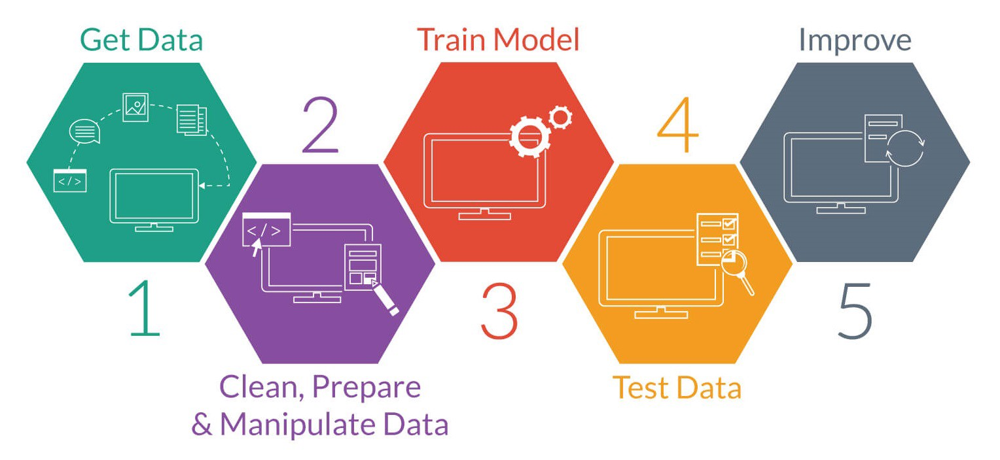

AI Sentience
Prompt: Can AI be sentient?
AI Sentience
Karthik Peravali
Allen High School
Advanced Computer Science II
Mr. Ben-Yaakov
September 2, 2022
AI Sentience is becoming a more and more popular topic in the coming future. People are talking more about Artificail Intelligence, and pondering the question of whether these AI can or cannot be sentient. The idea of sentience, is derived from the modern thought of whether humans can generate a piece of machniery to think like a human. That is the basis of AI sentience, and the debate is over whether such a fantasy can happen for real or not. AI Sentience cannot happen, at least in the near future, simply because the process behind machine learning, does not result in sentience, but instead creates AI competence.
What is AI?
AI simply put it, is machines intaking input given by the interface or the user, and using their own derived logic and reasoning, in order to push out an output. The hidden networking and logic that is between the input and the output is unkown. The programmer nor the machine knows what its doing during the time between the input and the output. Why is this? In order to understand this hidden mess, we must know how machines, not AI, are built. Programmers build machines by inputing a code that the programmer derived, and the machine will follow. In this instance, the machine is not thinking for itself instead following the rules set by the programmer. When building AI's. the programmer cannot just give a set of instructions for the machine to follow, then it won't derive its own logic to perform tasks.

Instead the programmer builds 2 types of programs: A buildign program to build student bots, and a teaching program to test student bots. This is the AI building process. For example lets say the coder wants the bot to tell the difference between 1 and 2. Easy for humans because we have neural connections in out mind that helps us tell the difference between 1 and 2, but to a machine, those 2 inputs are just random source code images of 1's and 0's, no real significance for the machine. Give a test to a robot, it will fail badly, so the AI building process begins. The building bot starts creating student bots using random connections and interactions. These student bots like our first bot, cannot tell the differencebetween 1 and 2, there is no logical setup yet. Thats where the teaching bot comes in to try to teach to students between 1 and 2. The teaching bot has no idea how to tell the difference, but instead recieves a test from the programmer with the answers. The teaching bots tests the student bots with and exam, and tells them to tell the difference between 1 and 2. These student bots who have no logical connections for these images will fail, by clicking random answers.
Most fail, but some through random chance pass. Bots who failed get recycled, but bots who pass go back to the building bot to get tweaked and rebuilt. The building bot sees the connections the passing students bots made and use that to redesign the student bots. Repeat this process again and again, for millions of student programs, with exams with millions of questions. After multiple interactions, tests, and connections were made, a studen bot emerges where it can kind of tell the difference between 1 and 2 without random chance involved. That bot gets tweaked millions of times going through the same process until it can finally tell the difference between 1 and 2 without any external help or random chance. It had learned a key differnce between those 2 images. Give any sets of images ranging from 1 and 2, and it can tell the difference. Now open up this bot and the logical program that it developed is unkown. The programmer, the builder bot, the teaching bot, or this perfect student bot know what logical interactions were made to spit out the right output. The Intelligince in AI is unknown by the programmer and the AI itself.
Can AI be Sentient?
The idea that AI, can think forthemsleves, cannot happen in the near future. Though the process of machine learning showed that AI have a node to node connection pathway between a given input and their output, meaning they do think for themselves, the case is not exactly true. The AI itself does not understand how the connective pathway works? How does this mean that AI can think for themselves. The problem is humanity is looking at this problem from a wrong perspective. AI being sentient is a still a mystery, but AI are competent. Look at any AI system that was developed recently, going through the machine learning process, we can see the connections made by any recent AI program is unknown. The developer nor the program knows what that hidden connection is or how it works. That is the major different between machine learning and human learing. Humans learn through emotional connections, and their nueral pathways are developed through experience, and memories. A human knows what he or she is learning at the moment, and remembers these nueral connections they made like a machine, but instead of not understanding what connections were made, humans instead build more off their understood neural connections, generating sentience. An AI or a smart language program simply cannot do that because it has no understanding of the connections pathway it made to do its assigned job. It cannot registered what it "leared" at the moment, instead like any machine, just use this new connection to perform its task. AI sentience is not developed yet in any of these new "AI sentient technolgy." Instead those types of AI's are competent not sentient. Compentence in the sense they can perform efficiently using their derived connections to give the developer, inteface, or the user what they want. Instead of trying to find AI to be sentient, we must see their advancements when it comes to being competent. AI are getting better and better at what they are designed to do, which is make a task easier and more efficient of the developer, interface, or user. That is the basis of machines, and AI fit that bill. Sentience can happen in the distant future, it an AI can set up its own machine learnign process, and code itself without the need of a developer, sentince maybe achived, but as of now, AI are not sentient, they are amazingly competent.
Works Cited
Metz, C. (2022, August 5). A.I. is not sentient. why do people say it is? The New York Times. Retrieved September 3, 2022, from https://www.nytimes.com/2022/08/05/technology/ai-sentient-google.htmlQuilty-Harper, C. (2022, June 17). Can ai gain sentience? here's how google chatbot lamda answers human questions. Bloomberg.com. Retrieved September 3, 2022, from https://www.bloomberg.com/news/articles/2022-06-17/can-ai-gain-sentience-maybe-but-probably-not-yet-quicktake
Metz, R. (2022, June 14). No, Google's AI is not sentient | CNN business. CNN. Retrieved September 3, 2022, from https://www.cnn.com/2022/06/13/tech/google-ai-not-sentient/index.html
YouTube. (2017). How Machines Learn. YouTube. Retrieved September 3, 2022, from https://www.youtube.com/watch?v=R9OHn5ZF4Uo.